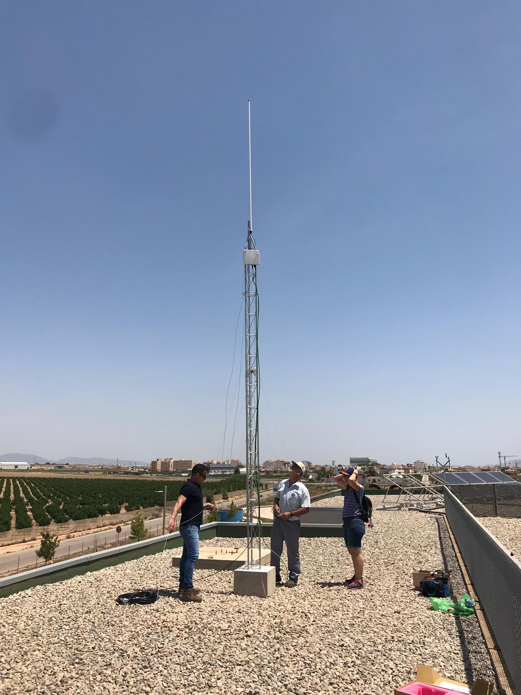
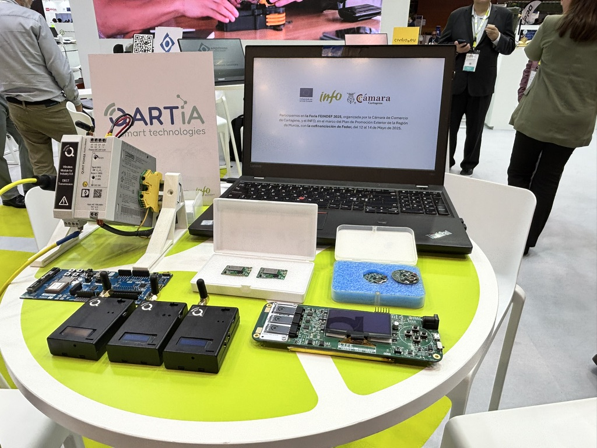

Device and firmware
Local capture, edge logic, energy management and data packaging according to the application.
Qartia develops advanced IoT solutions to capture, transmit, process and exploit data in real time, combining electronics, firmware, edge computing, cloud, private communications and exploitation platforms.
The proposal adapts to projects where devices, gateways, industrial protocols, databases, analytics, artificial intelligence and dashboards must be integrated within an operational architecture prepared to grow in phases.
The objective is that connectivity is not an isolated layer, but part of a useful solution to operate, monitor, automate and decide.
Local capture, edge logic, energy management and data packaging according to the application.
MQTT, Modbus, Ethernet, BLE, LoRa, DECT NR+ and other industrial and territorial integration layers.
Near-field processing, storage, synchronization and management of operational history.
Dashboards, alerts, AI, RAG, business rules and automation on real-time information.
Qartia combines sensors, acquisition, gateway, private network and Internet access according to coverage, latency, autonomy and criticality of the service.
The architecture does not end at transmitting packets. Qartia also designs the exploitation layer: dashboards, historicization, AI, business rules and services RAG for advanced consultation about the system.

Design and integration of nodes, hardware and electronics ready for production or pilot.
Gateways and edge logic for filtering, aggregation and local control.
Private architectures and Internet access via 5G, WiFi, Ethernet or combinations.
MQTT, Modbus, BLE, Ethernet and industrial or manufacturer protocols.
Data persistence, historical governance and exploitation of events over time.
Real-time visualization, reporting and warnings for operation and maintenance.
Prediction, classification, contextual analysis and natural query on captured data.
Ability to start as a pilot and evolve to corporate architecture without total redesign.
Variables, criticality, coverage, latency, integration and data exploitation objectives.
Device, gateway, network, database, visualization and associated services.
Installation, field validation, stability check and operational adjustment.
Replication, new locations, new devices and evolution of the system in phases.
Qartia can help you design the complete architecture, integrate it with your platform and prepare it to grow with industrial criteria.
